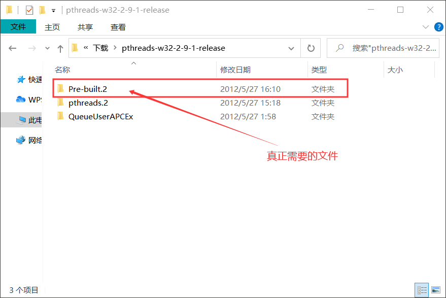
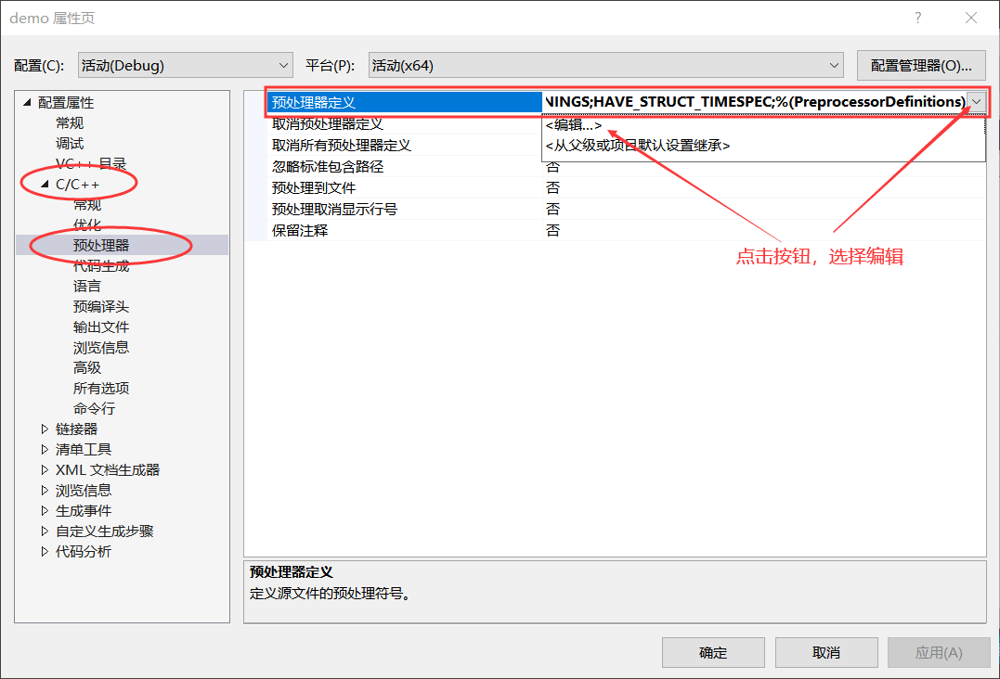
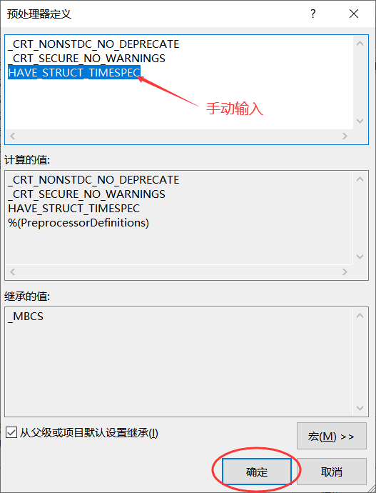
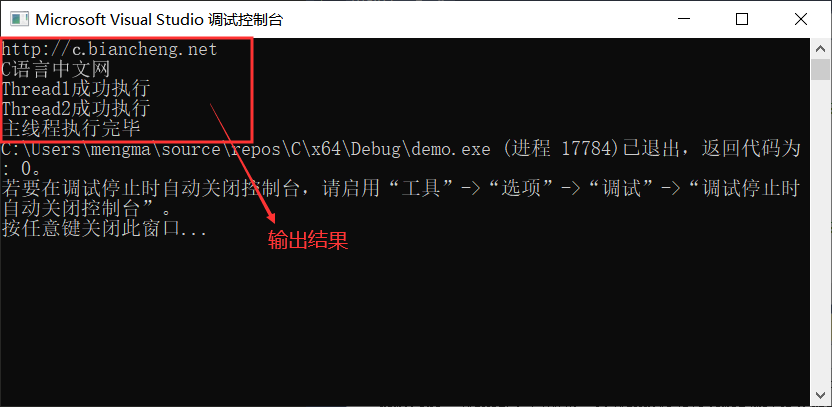

首页 > 编程笔记
VS2017 Pthreads多线程库配置教程
几乎所有的类 Unix 系统都支持 POSIX 标准，我们可以在这些系统中使用 Pthreads 库（全称 POSIX Threads）编写多线程程序。如今的 POSIX 标准，影响力已不仅限于类 Unix 系统，越来越多的操作系统都开始朝着支持该标准的方向发展，其中就包括我们常用的 Windows 系统。
Windows 开发人员研发出了支持 POSIX 标准的多线程库，起名为 Pthreads-win32。经过不断的迭代、更新，Pthreads-win32 库已经实现了 Pthreads 库绝大部分的功能，甚至还围绕 Windows 系统扩展了很多功能。截止到 2010 年 4 月，Pthreads-win32 多线程库已经更新到 2.9.1 版本。
Pthreads-win32 库沿用了 Pthreads 库的命名规则，比如程序中引入 <pthread.h> 头文件就可以使用 Phtreads-win32 库，仍用 pthread_attr_t 类型的变量表示线程，初始化线程仍使用 pthread_attr_init() 函数等。这意味着，我们先前编写的多线程程序无需修改或者稍作修改就可以移植到 Windows 系统上运行。
接下来，我们就来为大家讲解“如何在 VS（Visual Studio）上使用 Pthreads-win32 库执行 C 语言多线程程序”。
首先，打开官方提供的 Pthreads-win32下载页面，点击 pthreads-w32-2-9-1-release.zip 压缩包开始下载（如图 1 所示）：

图 1 下载 Pthread-win32 库
下载完成后，我们就得到了一个名为 pthreads-w32-2-9-1-release.zip 的压缩包，解压后会得到图 2 所示的 3 个文件：
整个配置 VS2017 的过程中，我们只需要使用 Pre-built.2 文件夹中的资源。配置过程如下：
1) 找到 VS2017 的安装路径（比如笔者电脑上 VS2017 的安装路径为
2) 将
3) 将
完成以上 3 步操作后，我们就可以在 VS2017 中使用 Pthreads 多线程库了。需要注意的是，程序中引入 <pthread.h> 头文件进行多线程编程时，程序开头还必须添加如下语句：
编译程序过程中，如果 VS2017 提示
1) 菜单栏中依次选择“项目->属性”，如下图所示：

图 3 打开项目属性面板
2) 打开的对话框中依次选择“C/C++ -> 预处理器”，然后右侧窗口中点击“预处理器定义”一行的下拉按钮，再点击
3) 弹出的“预处理定义”窗口中，手动输入
由此，编译器报
我们以《第一个多线程程序》一节中编写的多线程线程为例，首先在程序的开头位置添加
Windows 开发人员研发出了支持 POSIX 标准的多线程库，起名为 Pthreads-win32。经过不断的迭代、更新，Pthreads-win32 库已经实现了 Pthreads 库绝大部分的功能，甚至还围绕 Windows 系统扩展了很多功能。截止到 2010 年 4 月，Pthreads-win32 多线程库已经更新到 2.9.1 版本。
Pthreads-win32 库沿用了 Pthreads 库的命名规则，比如程序中引入 <pthread.h> 头文件就可以使用 Phtreads-win32 库，仍用 pthread_attr_t 类型的变量表示线程，初始化线程仍使用 pthread_attr_init() 函数等。这意味着，我们先前编写的多线程程序无需修改或者稍作修改就可以移植到 Windows 系统上运行。
接下来，我们就来为大家讲解“如何在 VS（Visual Studio）上使用 Pthreads-win32 库执行 C 语言多线程程序”。
Pthreads-win32的下载和使用
Visual Studio（简称 VS）是微软发布的一款 IDE，为了适应最新的 Windows 操作系统，微软每隔一段时间都会对 VS 进行升级，目前 VS 较新的版本有 2017 版和 2019 版。VS 默认是不支持使用 Pthreads-win32 库的，接下来我们就以 VS 2017 为例，给大家讲解如何配置 VS 2017 使其能够使用 Pthreads-win32 库。有关 VS 编译器，读者可前往C语言编译器页面进行下载和安装。
首先，打开官方提供的 Pthreads-win32下载页面，点击 pthreads-w32-2-9-1-release.zip 压缩包开始下载（如图 1 所示）：
图 1 下载 Pthread-win32 库
下载完成后，我们就得到了一个名为 pthreads-w32-2-9-1-release.zip 的压缩包，解压后会得到图 2 所示的 3 个文件：

图 2 解压后得到的文件
图 2 解压后得到的文件
整个配置 VS2017 的过程中，我们只需要使用 Pre-built.2 文件夹中的资源。配置过程如下：
1) 找到 VS2017 的安装路径（比如笔者电脑上 VS2017 的安装路径为
E:\VS2017），将Pre-built.2\include文件夹的所有 .h 文件移动到E:\VS2017\VC\Tools\MSVC\14.16.27023\include\路径下（注意，笔者这里 MSVC 文件夹下保存的是 14.16.27023 文件夹，不同机器上的文件夹名称可能不同）。2) 将
Pre-built.2\lib\x86\文件夹中的所有文件全部移动到E:\VS2017\VC\Tools\MSVC\14.16.27023\lib\x86文件夹中；将Pre-built.2\lib\x64\文件夹中的所有文件全部移动到E:\VS2017\VC\Tools\MSVC\14.16.27023\lib\x64文件夹中。3) 将
Pre-built.2\dll\x86\文件夹中的所有文件移动到C:\Windows\SysWOW64\文件夹中；将Pre-built.2\dll\x64\文件夹中的所有文件移动到C:\Windows\System32文件夹中。完成以上 3 步操作后，我们就可以在 VS2017 中使用 Pthreads 多线程库了。需要注意的是，程序中引入 <pthread.h> 头文件进行多线程编程时，程序开头还必须添加如下语句：
#pragma comment(lib,"pthreadVC2.lib")由此，VS2017 才能正常地编译程序。
编译程序过程中，如果 VS2017 提示
“timespec”:“struct”类型重定义错误，解决方案如下：1) 菜单栏中依次选择“项目->属性”，如下图所示：
图 3 打开项目属性面板
2) 打开的对话框中依次选择“C/C++ -> 预处理器”，然后右侧窗口中点击“预处理器定义”一行的下拉按钮，再点击
<编译....>选项，整个操作过程如下图所示：

图 4 打开预处理定义界面
3) 弹出的“预处理定义”窗口中，手动输入
HAVE_STRUCT_TIMESPEC然后点击确定，如下图所示：

图 5 修改预处理器定义
由此，编译器报
“timespec”:“struct”类型重定义错误的问题即可解决。我们以《第一个多线程程序》一节中编写的多线程线程为例，首先在程序的开头位置添加
#pragma comment(lib,"pthreadVC2.lib")语句，下图展示了 VS2017 的执行结果：

图 6 VS2017执行多线程程序的输出结果
图 6 VS2017执行多线程程序的输出结果
关注公众号「站长严长生」，在手机上阅读所有教程，随时随地都能学习。内含一款搜索神器，免费下载全网书籍和视频。

微信扫码关注公众号